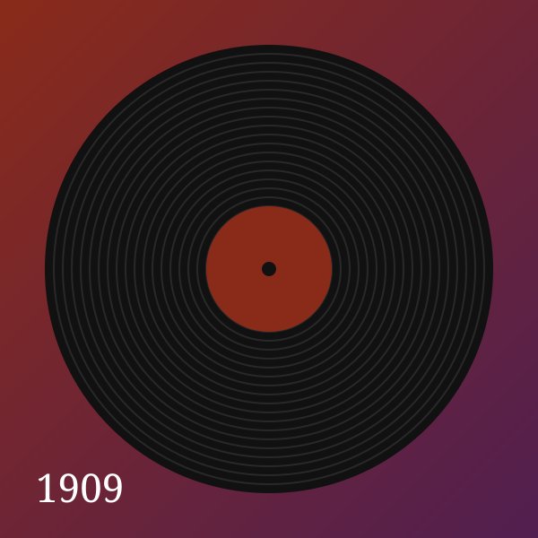

Mardiros Der Sarkis Tashjian, “Hairenikt Mortsir” (Columbia E531/4084, 1909)

Background: The song stages a confrontation between the emigrant and an unnamed “foreigner” who urges abandonment of the homeland as barren and ruined. The singer's answer is emphatically defiant: he will continue to love and remember Armenia and Cilicia. This makes the recording a strong example of diasporic grievance and resistance to assimilation, although it is not a direct account of a single retaliatory act or a fully documented protest against a named policy.
Proposed role: Diasporic grievance / defiant remembrance / anti-assimilation